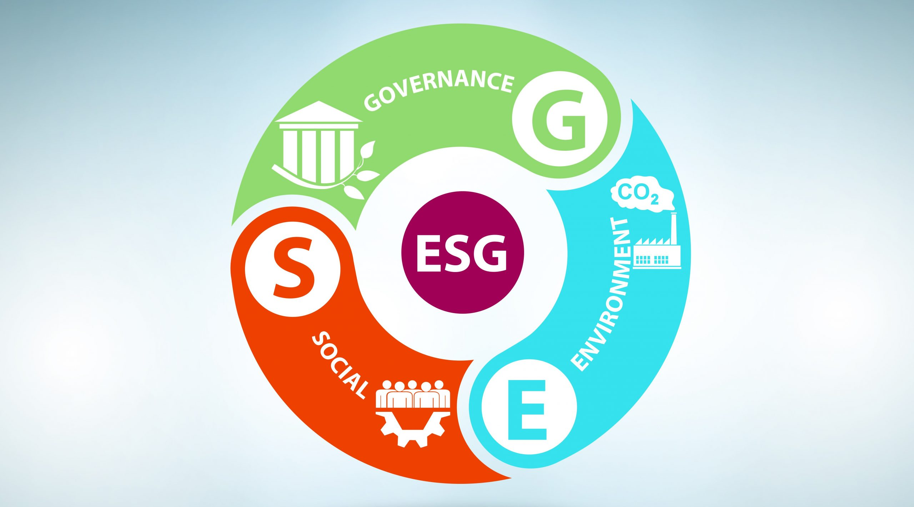

Tecnologia e Sustentabilidade Impulsionam Inovação Corporativa e Administrativas
O principal objetivo da Tecnologia Sustentável é produzir sistemas utilizando materiais ecológicos, e
mitigar os problemas ambientais usando a tecnologia. As organizações levam em conta vários aspectos ao construir
tecnologia de forma sustentável, como os recursos utilizados no desenvolvimento, a fonte desses materiais, e o
potencial negativo presente neles, como a emissão de agentes poluentes.
As empresas que implementam tecnologias sustentáveis ao redor do mundo possuem um objetivo em comum,
sendo ele aproximar-se dos ideais do ESG -- Environmental, Social and Corporate Governance Ela avalia os efeitos
sociais de um investimento em uma empresa, então um índice mais alto indica a posição do negócio no mercado.

Por exemplo, as empresas desenvolvem tecnologias como carros elétricos, que buscam usar menos combustíveis
fósseis, visando diminuir tanto como a busca por petróleo, e também a emissão de gases do efeito estufa (GEE), ou
remover resíduos por meio de iniciativas como a descarbonização, que é o processo de reduzir significativamente ou
eliminar o dióxido de carbono (CO2) e outras emissões de gases de efeito estufa da atmosfera.
Segundo o artigo “Inovação tecnológica e sustentabilidade: Integrando as partes para proteger o todo” Para
resolver os problemas ambientais, é necessário implementar estratégias de inovação tecnológica, o recurso apropriado
promove mudanças culturais, sociais e políticas, enfatizando a produção de recursos sustentáveis. Um plano para as
companhias adotarem esse método de inovação, seria usufruir de inteligências artificiais (IA) para produzir diagnósticos
e descobrir e determinar quais áreas de seus negócios geram mais desperdício, e aplicar uma ação para diminuir a
pegada de carbono. Eles podem usar a contabilidade de carbono para encontrar maneiras de reduzir suas emissões de gases
de efeito estufa ou até mesmo argumentar a favor da utilização de fontes de energia renovável visando esses dados.
Esses meios são uma maneira de impulsionar discussões sobre os impactos positivos da tecnologia no
meio ambiente. Outros setores, como arquitetura e engenharia, já têm visto essa tendência, e espera-se que, ao
longo dos próximos anos, seja um dos seus principais objetivos. As tecnologias sustentáveis propõem que temas
relacionados ao meio ambiente sejam priorizados quando se trata de desenvolver novas ferramentas e tecnologias.
Tecnologias Sustentáveis e Seus Impactos no ESG
Tecnologia Sustentável
Objetivo
Detalhes
Carros elétricos
Reduzir uso de combustíveis fósseis
Diminuir a busca por petróleo e a emissão de gases do efeito estufa (GEE)
Descarbonização
Reduzir ou eliminar emissões de CO2 e outros GEE
Processo de remover resíduos e reduzir emissões atmosféricas
Inteligência Artificial (IA)
Reduzir pegadas de carbono
Produzir diagnósticos para identificar áreas de desperdício nas empresas
Contabilidade de carbono
Reduzir emissões de gases de efeito estufa
Encontrar maneiras de reduzir emissões e promover o uso de fontes de energia renovável